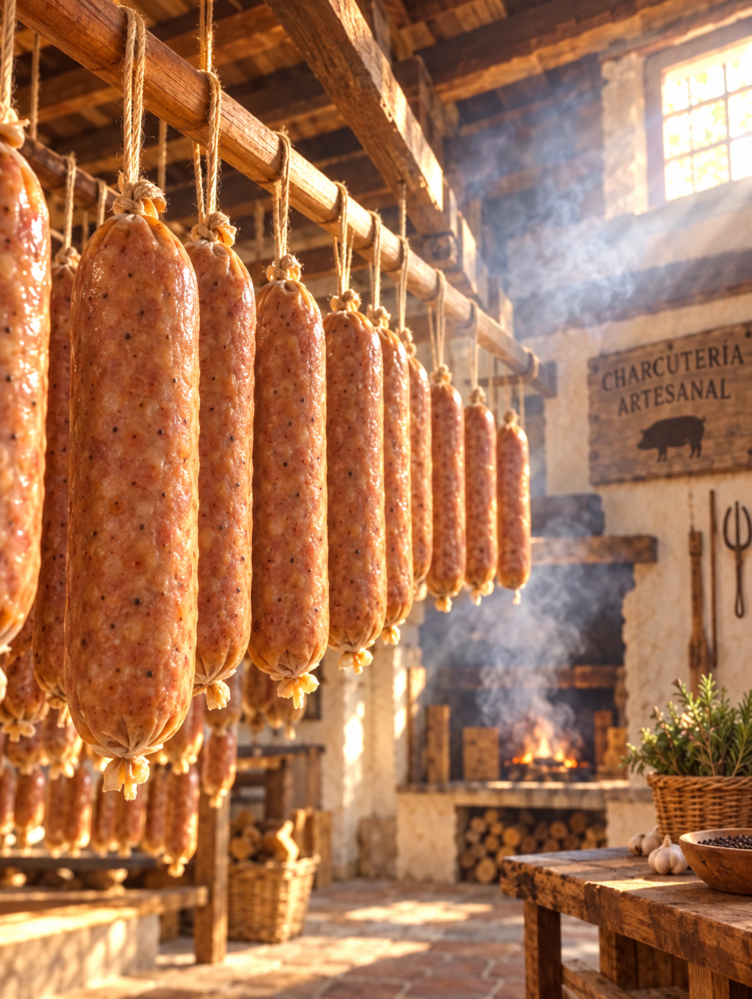
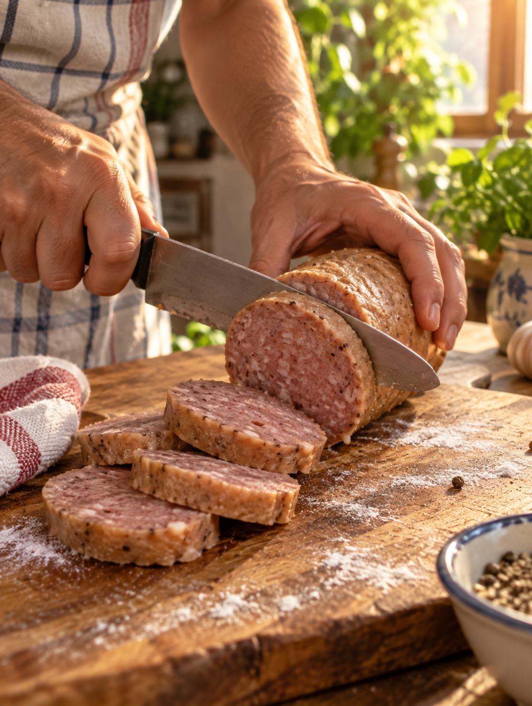

03 · fuego y encuentro
Cervecero
ahumado.
Calor, humo y ganas de compartir. Una variedad que convierte cualquier tarde en una mesa con historia.
Pedir Cervecero por WhatsApp ↗La experiencia
El humo abre
la conversación.
Cervecero ahumado tiene el pulso de una tarde larga: carácter tostado, aroma de fuego y ese acompañamiento que pide otra ronda.
Ámbar · cálido · ahumadoPara pan, cerveza fría, tabla al centro y amigos que llegan sin avisar.
Del proceso a la mesa
Míralo de cerca.

Próximamente: video real del proceso de ahumado. Mientras tanto, estas escenas cuentan el recorrido completo.
También puedes probar